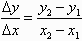
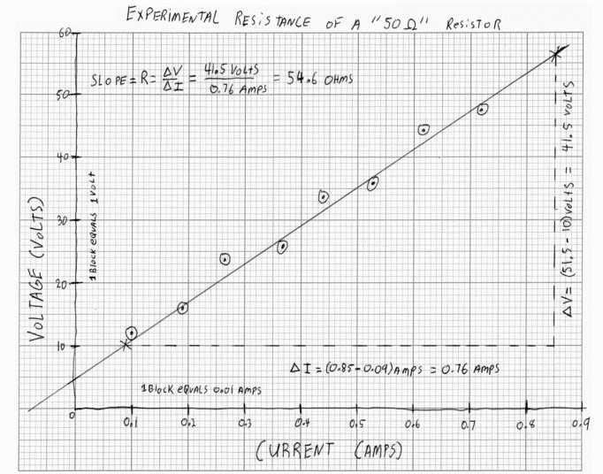

|
|

|
Physics Tutorial: Graphing
|
Physics Lab Tutorials
- All graphs should be done by hand in pencil on graph paper.
(As the semester progresses you may be allowed to use a
computer to generate graphs once proficiency with hand-drawn
graphs is shown.)
- Unless instructed to do so, draw only one graph per page.
- The graph should use as much of the graph paper as possible.
Carefully choosing the best scale is necessary to achieve this.
The axes should extend beyond the first and last data points in
both directions.
- All graphs should have a short, descriptive title at the
top of each graph, detailing what is being measured.
- Each axis should be clearly labeled with titles and units.
- Clearly label the scale of each axis. For instance, "1
square = 0.1 meters".
- Never connect the dots on a graph, but rather give a
best-fit line or curve.
- The best-fit line should be drawn with a ruler or similar
straight edge, and should closely approximate the trend of all
the data, not any single point or group of points.
- A best-fit line should extend beyond the data points.
- The slope should be calculated from two points on the
best-fit line. The two points should be spaced reasonably far
apart. Data points should not be used to calculate the slope.
- On a linear graph, draw the rise, y,
and run, x, to form a triangle with the
best-fit line. Be sure to label these values and include units.
- The calculation of the slope,
 ,should
be clearly shown on the graph itself. Units should be included,
and value of the slope should be easily visible.
- See the sample graph below which incorporates the above
requirements.

Physics Lab Tutorials
If you have a question or comment, send an e-mail to Lab Coordinator:
Jerry Hester
|
|
|
|
|
|

Copyright © 2006. Clemson University.
All Rights Reserved.
Photo's Courtesy Corel Draw.
Last Modified on 01/27/2006 14:25:18.
|
|
|